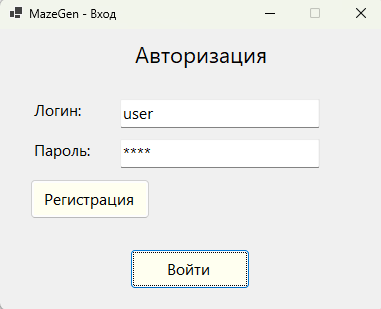
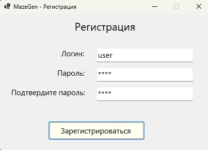
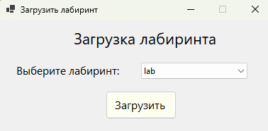
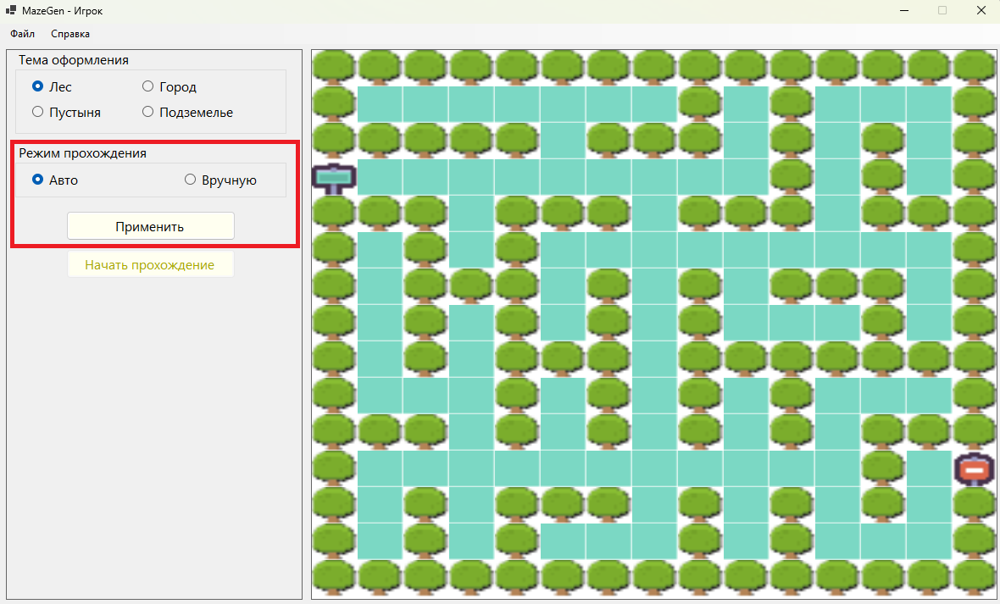
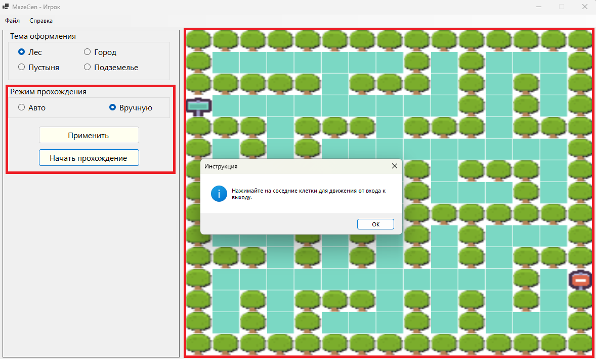
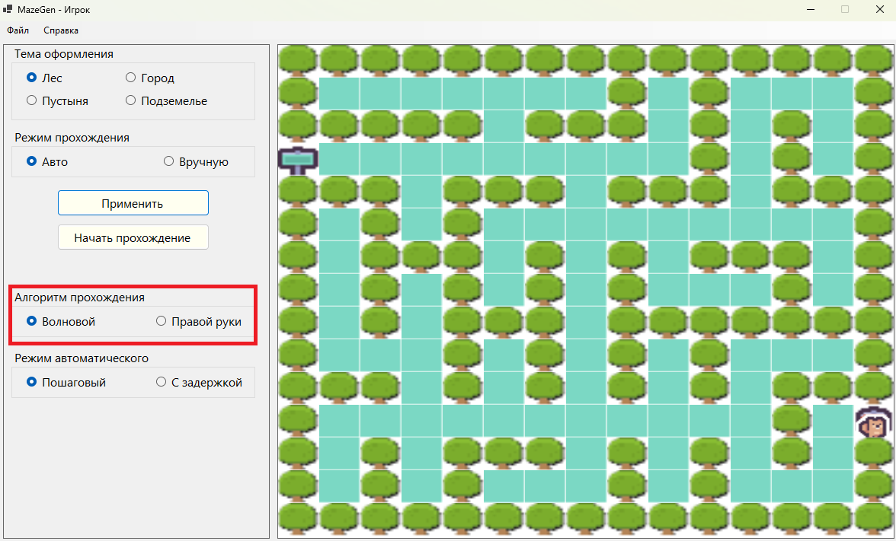
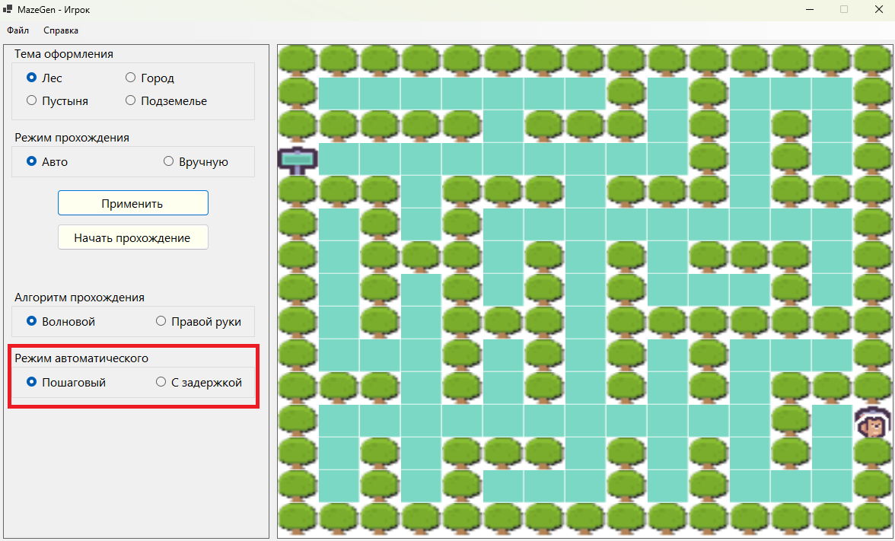
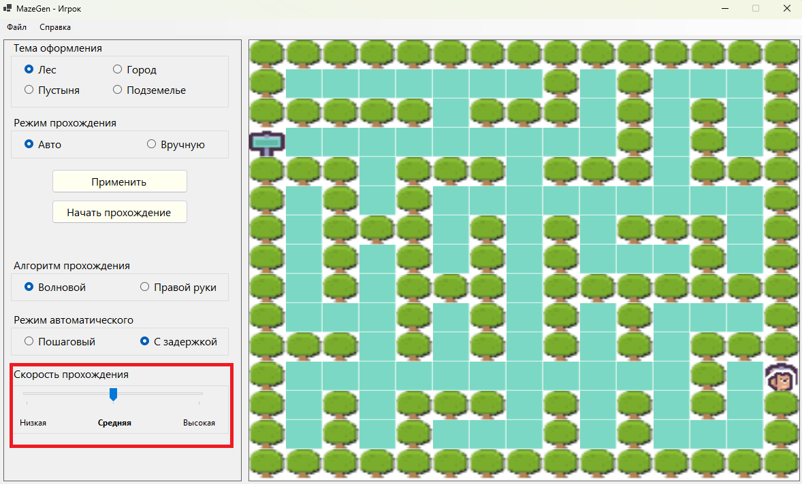
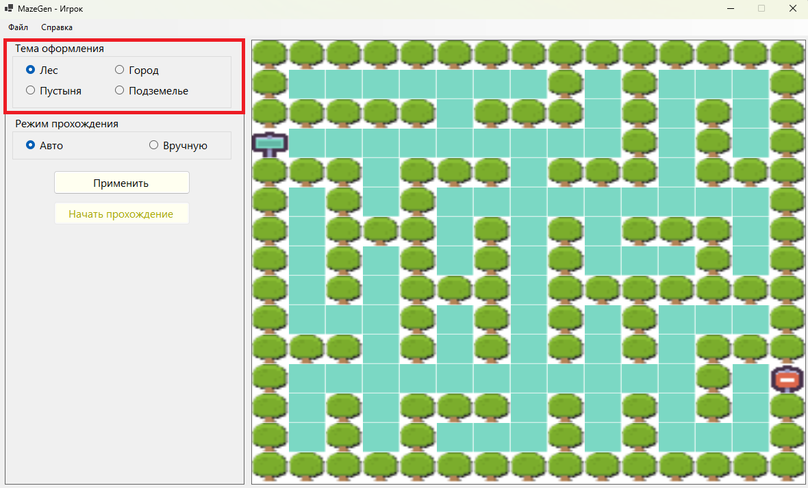

Введение
Автоматизированная система генерации лабиринта и нахождения выхода из него предназначена для автоматического создания лабиринтов, визуализации их структуры и демонстрации различных алгоритмов прохождения. Программа использует базу данных SQLite (требует предустановки библиотек). Программная система совместима с Windows 10. Системные требования: 3 Гб оперативной памяти, 35 Гб жесткого диска
Для начала использования приложения пользователь должен пройти авторизацию, а новый пользователь должен пройти регистрацию.
Описание функций игрока
1. Авторизация пользователя
Пользователь выполняет вход в систему с помощью ввода логина и пароля в соответствующие поля на форме авторизации. Новым пользователям необходимо зарегистрироваться, нажав кнопку "Зарегистрироваться" на форме. После проверки данных интерфейс автоматически настраивается под роль игрока.

2. Регистрация пользователя
Новый пользователь может зарегистрироваться в системе, указав логин и пароль в соответствующие поля на форме регистрации. После успешной регистрации пользователь получает доступ к функциям прохождения лабиринтов.
- Минимальная длина логина — 4 символа.
- Максимальная длина логина — 16 символов.
- Минимальная длина пароля — 4 символа.
- Максимальная длина пароля — 16 символов.

3. Загрузка лабиринта
Для начала прохождения лабиринта пользователь должен загрузить лабиринт из базы данных через специальную форму. Для открытия формы необходимо открыть меню "Файл" на главной экранной форме и выбрать пункт «Загрузить лабиринт». После этого откроется окно с выпадающим списком, содержащим названия всех доступных лабиринтов в базе данных. Для загрузки лабиринта необходимо выбрать его название из списка и нажать кнопку «Загрузить».

4. Выбор режима прохождения
Пользователь может может выбрать один из двух режимов прохождения лабиринта, выбрав одну из радиогрупп ("Авто" или "Вручную") и нажав кнопку "Применить".

В случае выбора автоматического режима пользователь должен будет выбрать алгоритм прохождения и режим автоматического прохождения (см п.6 и п.7).
5. Ручное прохождение лабиринта
Чтобы начать ручное прохождение лабиринта, пользователь должен выбрать радиогруппу "Вручную", а затем нажать на кнопку "Начать прохождение". В этом режиме пользователь самостоятельно перемещает персонажа, выбирая клетки лабиринта нажатием левой кнопки мыши на панели с визуализацией лабиринта.

6. Выбор алгоритма прохождения
Пользователь может выбрать один из алгоритмов прохождения лабиринта, выбрав радиогруппу "Волновой" или "Правой руки".
Волновой алгоритм - гарантирует нахождение кратчайшего пути.
Алгоритм правой руки - персонаж движется вдоль правой стены, пока не достигнет выхода.

7. Выбор режима автоматического прохождения
Пользователь может выбрать один из режимов автоматического прохождения лабиринта, выбрав радиогруппу "Пошаговый" или "С задержкой".
Пошаговый режим: пользователь должен нажать кнопку "Шаг" для продвижения к выходу на 1 клетку.
Режим с задержкой: система автоматически перемещает персонажа с выбранной скоростью (см п.7).

8. Выбор скорости прохождения
При использовании режима автоматического прохождения с задержкой пользователь может выбрать скорость передвижения персонажа (низкая, средняя или высокая), зажав ЛКМ по стрелке внутри блока выбора скорости, перемещая стрелку вдоль полоски вправо или влево.

9. Выбор темы оформления
Пользователь может изменить стиль визуализации лабиринта, выбрав одну из радиогрупп, соответствующих темам оформления: лес, пустыня, подземелье, город.

10. Смена пользователя
Пользователь может поменять учетную запись. Для этого нужно закрыть главную форму, после чего появится форма авторизации, где можно ввести новые учетные данные для входа или зарегистрироваться под новой учетной записью.